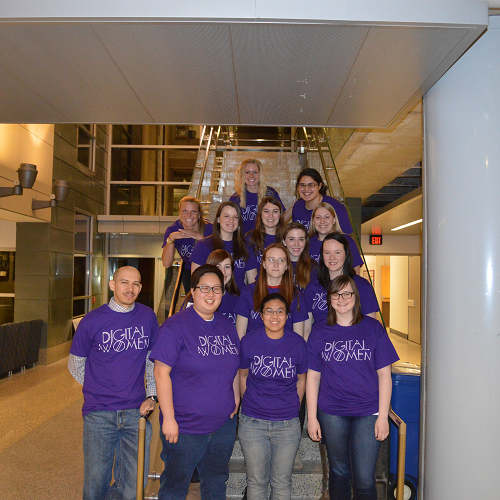
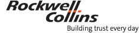
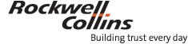
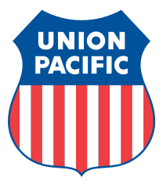
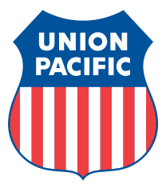

About Us

Digital Women is a community of women dedicated to encouraging, supporting and retaining women in Computer Science, Software Engineering, Electrical Engineering, Computer Engineering and MIS.
We want to help you succeed by providing opportunities for networking, career development, and much-needed fun with other like-minded women in technical majors.
Digital Women meets every Thursday at 6:30 p.m. in Coover 1016.
Joining Digital Women is easy! All you need to do is sign up on our stuorg website and begin showing up to meetings.
You can find our schedule of meetings here.
You can also find Digital Women on Facebook, Twitter, GitHub and our blog!
Meetings
| Date | Meeting | Time | Location |
|---|---|---|---|
| 9/3/15 | Ice Breaker & Developers/Cards Against Humanity | 6:30 p.m. | Coover 1016 |
| 9/17/15 | Workshop - Creating a Twitter Bot with Python (Gabby Ortman) | 6:30 p.m. | Coover 1016 |
| 9/10/15 | Union Pacific | 6:30 p.m. | Coover 1016 |
| 9/24/15 | IBM & Career Fair Prep | 6:30 p.m. | Coover 1016 |
| 10/1/15 | Rockwell Collins & Post Career Fair Help | 6:30 p.m. | Coover 1016 |
| 10/8/15 | Social Activity- TBD | 6:30 p.m. | TBD |
| 10/15/15 | No Meeting- Grace Hopper Conference | ||
| 10/22/15 | Workshop- TBD | 6:30 p.m. | Coover 1016 |
| 10/29/15 | Social Activity with HKN | 6:30 p.m. | Coover 1016 |
| 11/5/15 | Workshop- TBD | 6:30 p.m. | Coover 1016 |
| 11/12/15 | Social Activity- TBD | 6:30 p.m. | TBD |
| 11/19/15 | Company & TBD | 6:30 p.m. | Coover 1016 |
| 12/3/15 | Senior Send-Off & Christmas Tree Soldering Activity | 6:30 p.m. | Coover TLA |
 Gabby is a junior in Computer Science. She loves Python, betta fish and The Legend of Zelda series.
Gabby is a junior in Computer Science. She loves Python, betta fish and The Legend of Zelda series.
 Katie is a senior in Electrical Engineering. Her stress relief includes being outside and laying on the beach. She also makes going on adventures and making memories a top priority in her life.
Katie is a senior in Electrical Engineering. Her stress relief includes being outside and laying on the beach. She also makes going on adventures and making memories a top priority in her life.
 Gabby & Ellen - Dynamic Duo
Gabby & Ellen - Dynamic Duo
 


 
